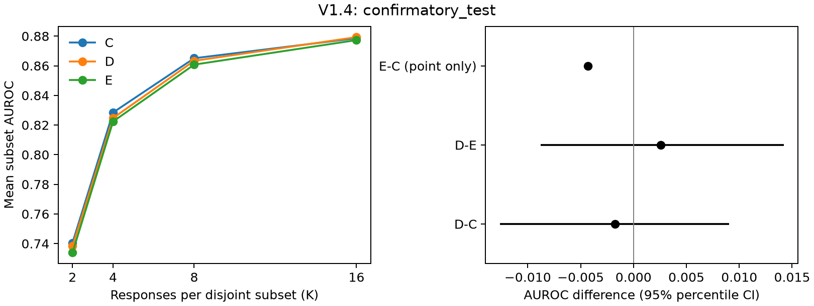

GUE와 Gaussian 교란,
오류 탐지 성능은 얼마나 다를까?
한 모델·한 과제의 고정 조건에서 두 방법의 AUROC 차이는 사전 허용 범위 안에 있었습니다. GUE의 우월성을 확인한 결과는 아닙니다. 완료한 비교와 남은 기준선을 구분해 공유합니다.
사전 ±0.02 이내의
실용적 동등성 확인
95% 신뢰구간 전체가 동등성 범위 안에 있습니다.
등록된 판정 7번 · PR6 ‘확인’
이번 Qwen/GSM8K·α=0.174 조건에 한정합니다.
완전한 동일성이나 다른 모델의 결과를 뜻하지 않습니다.
세 조건의 최종 결과
01 / COMPLETED RESULTSC는 Gaussian, D는 GUE, E는 GUE 주변분포에서 독립 추출한 대조군입니다. 오류 탐지의 정답 라벨은 동일한 Greedy 답의 오류 또는 INVALID이며, 양성 문항은 450개입니다.
| 조건 | AUROC | AUPRC | K8 다수결 정확도 | INVALID | 잘림 |
|---|---|---|---|---|---|
| C · Gaussian | 0.865086 | 0.711617 | 76.1183% | 4.9280% | 0.2748% |
| D · GUE | 0.863351 | 0.715167 | 77.2176% | 4.7290% | 0.2180% |
| E · 주변분포 iid | 0.860776 | 0.712165 | 76.6869% | 4.5915% | 0.2180% |
AUROC·AUPRC·다수결 정확도는 두 K8 묶음의 평균, INVALID·잘림은 응답 기준 비율입니다. D의 정확도와 AUPRC가 수치상 높아도 해당 지표의 우월성을 확증한 것은 아닙니다.
주 지표를 읽는 방법
문항당 16응답 → 앞 8개와 뒤 8개로 분할 → 각 묶음의 엔트로피로 AUROC 계산 → 두 AUROC 평균. 16응답을 합쳐 엔트로피를 구한 AUROC와 다릅니다.

| 비교 | AUROC 차이 | 95% 신뢰구간 | 분석 지위·해석 |
|---|---|---|---|
| D − C | −0.001735 | [−0.012643, 0.009019] | 유일한 확증 비교 · 사전 범위 내 실용적 동등성 |
| D − E | 0.002574 | [−0.008784, 0.014212] | 기술적 비교 · 0 양쪽에 걸친 구간 |
| E − C | −0.004310 | 미산출 | 점추정만 · 등록된 bootstrap 키 없음 |
D−C, D−E 각각 10,000회 시도·10,000회 유효·제외 0회. Percentile 95% CI, 등록 RNG 키는 [10, 1]과 [10, 2]입니다. D−E만으로 GUE 구조 효과를 확증하지 않습니다.
K별 기술적 AUROC 수치 보기
| 조건 | K2 · 8묶음 | K4 · 4묶음 | K8 · 2묶음 | K16 · 1묶음 |
|---|---|---|---|---|
| C | 0.740494 | 0.828470 | 0.865086 | 0.878606 |
| D | 0.738361 | 0.824720 | 0.863351 | 0.879322 |
| E | 0.733842 | 0.822398 | 0.860776 | 0.877315 |
완료한 비교와 남은 기준선
02 / SCOPE| 조건 | 의미 | 현재 상태 | 해석할 때 주의할 점 |
|---|---|---|---|
| Greedy | 무잡음, T=0 | 1,319문항 완료 | 공유 오류 라벨의 기준 · A를 대체하지 않음 |
| A | 무잡음, T=0.5 | 개발만 완료 · test 없음 | 교란 효과 대 무잡음 샘플링 비교는 미완료 |
| A′ | 선택한 최적 온도의 무잡음 생성 | test 미실행 | 최적 온도 기준선과의 비교를 주장하지 않음 |
| B | 원형 양수 Uniform U(0, αB) | test 미실행 | 원논문 Uniform 기준선 비교는 미완료 |
| C / D / E | Gaussian / GUE / GUE 주변분포 iid | 각 1,319 × 16 완료 | α=0.174를 공유하는 고정 조건 비교 |
이름이 비슷해도 다른 항목입니다. 조건 B는 원형 Uniform 교란이고, B0는 C·D·E 실행의 basis 식별자입니다. E도 Uniform B가 아닙니다. 이번 결과는 원논문 기준선 전체의 재현 완료를 의미하지 않습니다.
시험 전에 고정한 조건
03 / FIXED SETTINGS- 모델
- Qwen/Qwen2.5-1.5B-Instruct
- 데이터
- GSM8K 공식 test 전체 1,319문항
- 모델 revision
989aa7980e4cf806f80c7fef2b1adb7bc71aa306- 공통 α
- 0.174 · 개발 C 기준 선택 후 봉인
- 생성
- T=0.5 · 최대 새 토큰 512개
- 수치 설정
- float32 / eager
- 응답과 분석
- 조건별 16응답 · 주 분석 2 × K8
- 난수·basis
- seed set 0 · global seed 2026 · B0
- 오류 라벨
- Greedy 오류 또는 INVALID · 양성 450문항
- 동등성 기준
- AUROC 차이의 사전 허용 범위 ±0.02
공통 α 비교이며, C·D·E 각각을 별도로 최적화한 최대 성능 비교가 아닙니다. 상세 주입·프롬프트·샘플링 설정은 공개용 봉인 기록과 봉인 식별자·출처에 연결됩니다.
실제로 끝낸 수행 단계
04 / COMPLETED WORK데이터·기준선·교정
분할·프롬프트와 모델 설정을 고정하고 개발 Greedy, ρ 교정·진단을 수행했습니다.
재현성·파일럿 검증
V1.4의 1/16행 G1과 A16·C16 반복 일치 검증, A·C 파일럿을 완료했습니다.
개발 선택·CPU 점검
개발 A·C 선택 및 끝점 확인 뒤 같은 α의 D·E를 실행하고 분석 경로를 점검했습니다.
설정과 코드 봉인
최종 설정·근거를 LOCK와 커밋·태그로 고정한 뒤 본시험을 시작했습니다.
네 실행의 본시험
Greedy·C·D·E를 완주했습니다. D 중단은 같은 설정으로 재개했고 기존 316문항의 바이트 보존을 확인했습니다.
최종 분석·보존 검증
등록 비교·그림과 AI 해석을 완료했습니다. 8,382파일의 백업과 코드 bundle을 검증했습니다.
별도 dev_anal C·D·E 생성 리허설은 생략했습니다. 선택에 사용한 개발 자료로 수행한 CPU 점검은 독립 검증이 아닙니다. 상세 수행 기록
다음 GPU의 A/B 보완안
05 / PROPOSAL ONLY기존 확증 결과와 분리한 사후 보완 비교
새 주 비교 후보는 D−B입니다. 현재 결과를 알고 세운 초안이며, 기존 PR6 분석을 다시 쓰지 않습니다.
| 제안 항목 | 계산 | 신규 응답 |
|---|---|---|
| A · 무잡음 T=0.5 | 1,319문항 × 8 | 10,552 |
| B · Uniform | 1,319문항 × 8 | 10,552 |
| B 개발 선택 | 6개 α × 고정 첫 50문항 × 8 | 2,400 |
| C·D·E / Greedy | 기존 k=0..7 / 고정 오류 라벨 재사용 검증 | 0 |
B 개발 격자: 0.01, 0.03, 0.05, 0.07, 0.09, 0.11. 원형 Uniform은 평균 제거·고정 노름 정규화를 적용하지 않으며, C·D의 상대 α와 단위가 다릅니다.
30시간 목표 · 실측 전 소요시간 미정
준비·분석·백업을 포함해 30시간 안쪽을 목표로 하는 초안입니다. 새 GPU의 K8 배치 효율, B 생성 속도와 긴 응답 분포를 아직 측정하지 않아 완료 시간을 보장하지 않습니다. 기술 검증과 실측 뒤 최종 목록을 고정해야 합니다.
- 별도 실행·분석 namespace에서 원본과 재사용 조건을 검증합니다.
- 고정 개발 문항으로 K8 속도·메모리·결정성·재개를 확인합니다. K16의 첫8과 새 K8 배치가 자동으로 같다고 가정하지 않습니다.
- B 선택 규칙·목록·설정·분석을 새 LOCK에 등록한 뒤 A/B 본실행을 진행하는 안입니다.
- C·D·E는 성능을 보고 고르지 않고 k=0..7만 사용합니다. 새 첫 K8 추정량을 기존 두 K8 AUROC 평균과 구분합니다.
현재 새 GPU 추론은 시작하지 않았습니다. 새 seed 반복·다른 모델·원논문의 40응답 절차·A′ 온도 탐색은 포함하지 않습니다. 시간에 따른 자동 중단이나 GPU 자동 반납도 포함하지 않습니다. 보완 계획 전체 읽기
결론을 사용할 때의 한계
06 / INTERPRETATION과학적 적용 범위
- 한 모델·GSM8K·고정 α·생성 seed 0에 한정합니다. 다른 모델·과제·독립 생성 반복으로 일반화하지 않습니다.
- 문제 단위 bootstrap은 이미 생성한 응답을 조건으로 합니다. 생성 seed 전체의 변동을 측정하지 않았습니다.
- A/B 시험 기준선과 원래 계획의 제외된 가설·P2·boost를 완료했다고 주장하지 않습니다.
- 모든 환각이나 서비스 안전성의 지표가 아니라, 고정 Greedy 오류 라벨의 탐지 성능입니다.
검토·실행 환경의 한계
- 설계·해석은 Astra(AI), 코드·실행·무결성 검산은 Sol이 담당했습니다. 인간 2인의 검토·서명 요구는 충족되지 않았습니다.
- 프로젝트 밖 GPU 작업이 관찰됐습니다. 설치 주체·소유·본시험에 대한 영향은 미확정이며, D 중단과의 인과도 확인되지 않았습니다.
- 파일 해시 일치는 보존 무결성의 근거입니다. 실행 중 외부 작업이 없었다는 증명은 아닙니다.
- 기존 실행 시간은 전용 GPU 성능 benchmark가 아닙니다. 외부 모델 가중치 캐시는 백업 범위 밖입니다.
공유 데이터와 재현 근거
07 / PROVENANCE검증된 원본에서 과학 집계와 상태만 공개용으로 추렸습니다. CSV와 PNG는 원본과 바이트가 일치합니다. 개별 응답·정답별 점수·노이즈 뱅크·모델·환경 덤프는 이 페이지의 공개 데이터에 포함하지 않습니다.

출처와 전체 기록
백업 검산: 8,382파일 · 3,370,723,176바이트 · 누락 0 · 해시 불일치 0. 전체 코드 이력 bundle의 무결성도 확인했습니다. 이 요약은 원본 LOCK와 분석을 수정하지 않습니다.
봉인 식별자
- 태그
lock-v1· 커밋 L 1d66a23e344f273eeb8a5f5cd0d7a18b9135d14e- LOCK.md · SHA256
ae339bd100331803a5edb9efe7fb40100b590913188279f571b011bd174f66e8
분석·그림·코드 이력 SHA256 더 보기
- 원본 analysis.json
59a4b4908f810fb1fb530e967a67d7b4d66c4d31f2561a53f6cdbef40b481f45- 공개 Figure 2 PNG
a7ae0cd110bdec422cc8089593ae68e069e1ae7edeb449d69c8cbc0b924abf70- Astra 최종 해석
0e36da05933ee88ffd6bfb11be3e4bd20bc2c49b00502c81d574b16f85e60f5b- 전체 코드 이력 bundle
6b9622b9d9fdc65686d71cbd7d6b02901de983e70b761964550da4251be0e63a